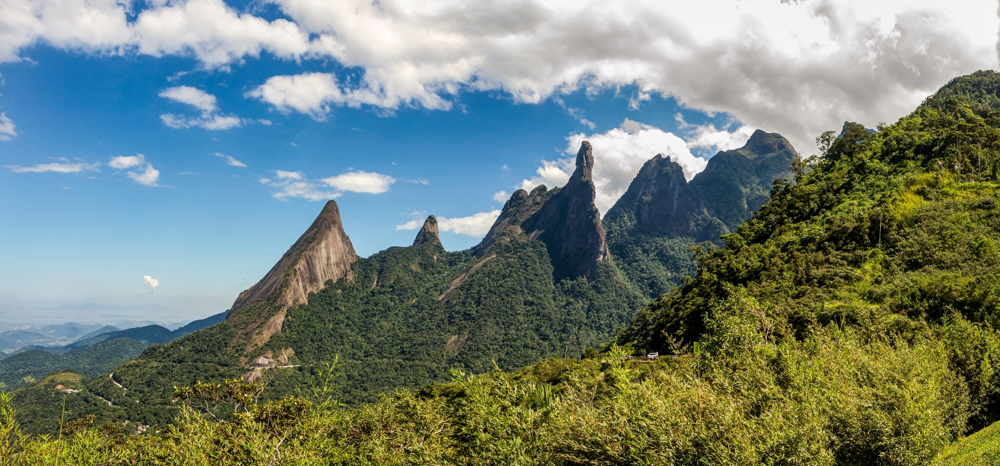
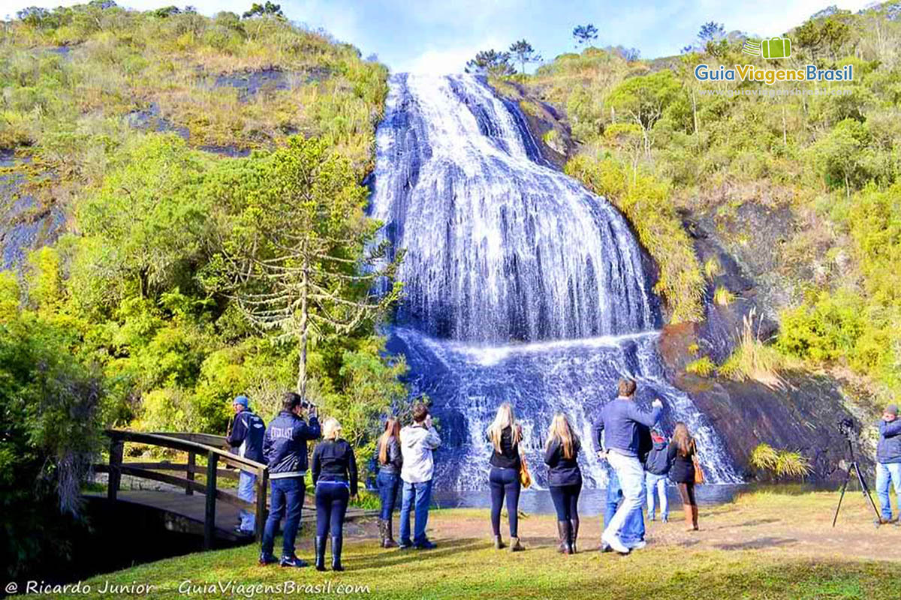
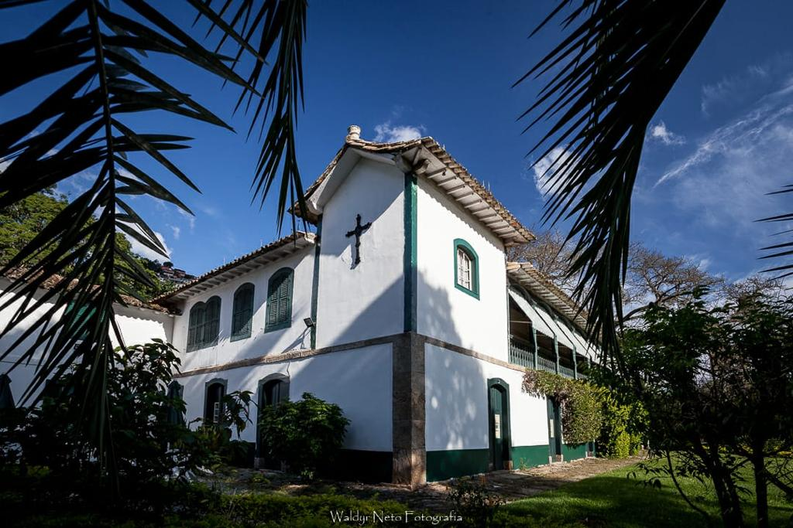

Área Oeste de Petrópolis
Explore os principais pontos turísticos da região Oeste de Petrópolis:
-
Parque Nacional da Serra dos Órgãos - Lindas trilhas e cachoeiras

-
Cascata do Véu da Noiva - Uma cachoeira deslumbrante

-
Fazenda Samambaia - História e natureza juntas
